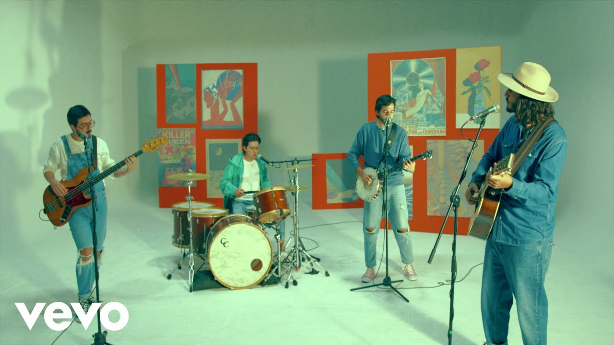
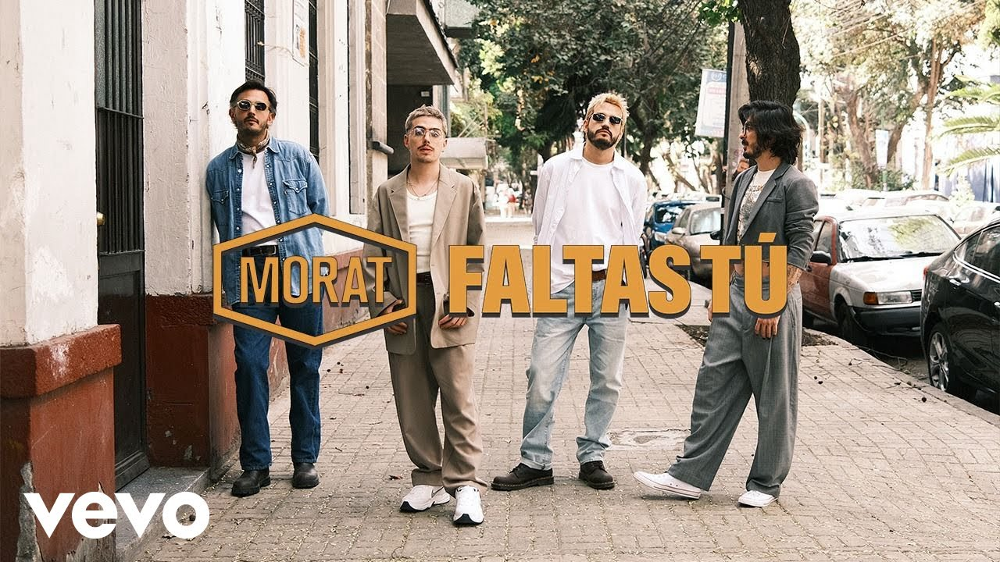
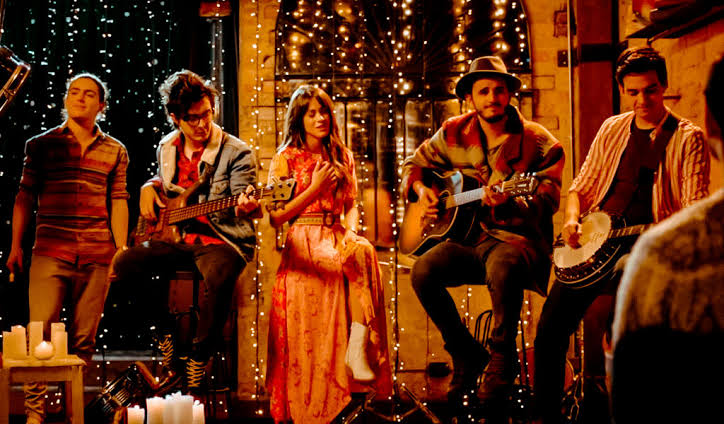

Su música y sus albúmes
¿Qué tipo de música hacen?
Morat combina diferentes estilos musicales, principalmente el pop latino y el folk-pop. Sus canciones se destacan por sus letras emotivas, sus armonías vocales y el acompañamiento de instrumentos acústicos.
Algunos de sus álbumes más conocidos
- Sobre el amor y sus efectos secundarios (2016).
- Balas perdidas (2018).
- ¿A dónde vamos? (2021).
- Si ayer fuera hoy (2022).
- Ya es mañana (2025).
Algunas de sus canciones más famosas
- Cómo te atreves.
- Besos en guerra.
- Cuando nadie ve.
- No se va.
- 506.
- Salir con vida.

Contacto
¿Queres conocer más sobre Morat?
Si querés conocer más sobre la banda, sus nuevas canciones, próximos conciertos y novedades, podés visitar sus redes sociales oficiales.
Redes sociales:
- Instagram: @morat
- Youtube: morat
- Spotify: morat
- Origen: Bogotá, Colombia

Curiosidades sobre Morat
¿Queres saber algunos datos interesantes sobre la banda?
Morat tiene varias características que la hacen especial. Sus integrantes son amigos desde pequeños y lograron convertir su pasión por la música en una carrera internacional.
- El nombre Morat viene de una finca llamada La Morat, donde ensayaban al principio.
- La banda utiliza instrumentos acústicos para darle un sonido particular a sus canciones.
- Sus canciones son escuchadas en muchos países de Latinoamérica y Europa.
- Han colaborado con artistas como Juanes, Sebastián Yatra y Tini.
- Sus conciertos se caracterizan por la energía y la participación del público.
